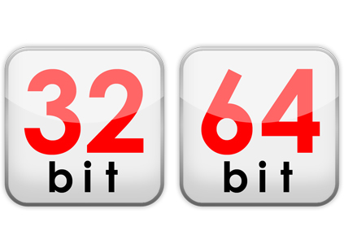

The title seems simple, just getting CPU structure to detect if your program running on an AMD64 or an Intel x86 machine.
Remember when you install a 32-bit operation system on a 64-bit machine then all features are 32 bit so your program supports only 32-bit processor and can’t be a 64-bit one even if your CPU is x64.
By the way I search a lot across the Internet for getting the answer but almost all of them gives me , wrong information and that’s because whenever you try to get information about CPU in current PE then the result is same as current running PE structure and in almost all the situations developers set their program to support both x86 and x64 so the final EXE file will be an x86 one and you can’t correctly get CPU Type.
The following code gives you the desired result :
1
2
3
4
5
6
7
8
9
10
11
12
13
14
15
16
17
18
19
20
21
22
23
24
25
26
27
28
29
30
31
32
33
34
35
36
37
38
39
40
41
static bool is64BitProcess = (IntPtr.Size == 8);
static bool is64BitOperatingSystem = is64BitProcess || InternalCheckIsWow64();
[DllImport("kernel32.dll", SetLastError = true, CallingConvention = CallingConvention.Winapi)]
[return: MarshalAs(UnmanagedType.Bool)]
private static extern bool IsWow64Process(
[In] IntPtr hProcess,
[Out] out bool wow64Process
);
public static bool InternalCheckIsWow64()
{
if ((Environment.OSVersion.Version.Major == 5 && Environment.OSVersion.Version.Minor >= 1) ||
Environment.OSVersion.Version.Major >= 6)
{
using (Process p = Process.GetCurrentProcess())
{
bool retVal;
if (!IsWow64Process(p.Handle, out retVal))
{
return false;
}
return retVal;
}
}
else
{
return false;
}
}
public static string GetOSStructure() {
if (is64BitOperatingSystem)
return "x64";
return "x86";
}
static void Main(string[] args)
{
Console.WriteLine(GetOSStructure());
Console.ReadKey();
}
Remember if you build your application just for x64 machines then your CPU is always x64.
That’s obvious. 😀
Comments powered by Disqus.